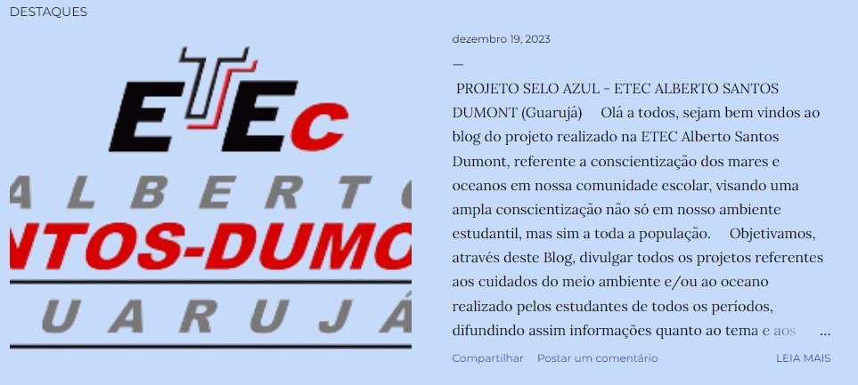

BLOG
O nosso blog visa trazer informação para uma ampla gama de pessoas, trazendo projetos feitos na escola por estudantes e que vizem trazer uma conscinetização quanto a preservação do meio ambiente e ao oceano, temas vigentes do cotidiano estando em vistas as mudanças climáticas afetadas pelas ações humanas.
Acreditamos que através do blog, pessoas terão oportunidade de saber mais sobre o tema e conhecerão a importância do cuidado do meio ambiente e ao oceano, além de dar credibilidade aos projetos feitos pelos alunos da Etec.
